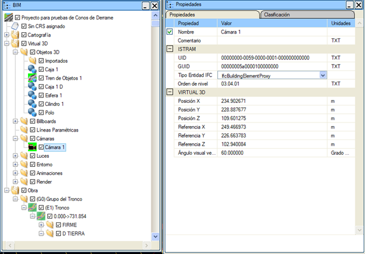
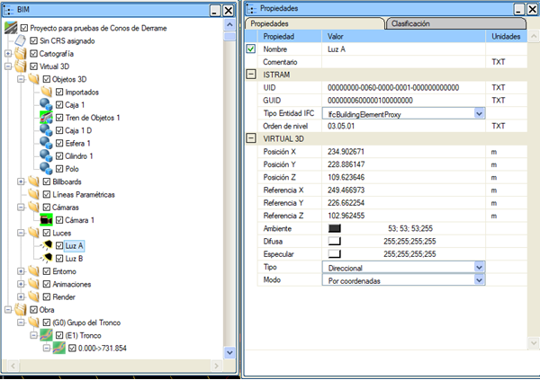
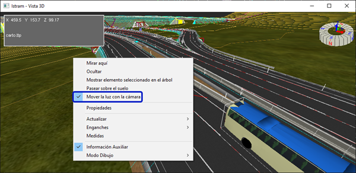
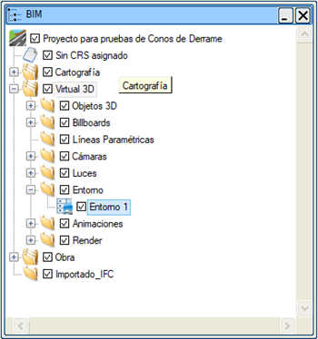

| |
|
Kamera, Işık ve Ortam
|
|
Kamera BIM ağacından, kamera düğümüne sağ fare tuşu ile tıklanarak kameranın özellikleri görüntülenebilir. 
İsim: kamerayı bir isimle tanımlamayı sağlar. Yorum: kameraya açıklayıcı bir yorum eklemeyi sağlar. Konum (X, Y, Z): kameranın bulunduğu tam noktayı belirtir. Referans (X, Y, Z): kameranın baktığı tam noktayı belirtir. Yönelim (Azimut, Zenit, Yatma Açısı): kameranın her bir eksende nasıl yönlendiğini belirtir. Azimut ve zenit, kameranın konumuna ve referans noktasına bağlıdır. Yatma açısı, kamera için "yukarı" yönünün neresi olduğunu belirtir. OpenGL'in nesnelerin hangisinin önde, hangisinin arkada olduğunu mümkün olan en yüksek hassasiyetle ayırt edebilmesi için, görmenin başladığı (daha öncesinde görülecek bir şey yok) ve bittiği (daha sonrasında görülecek bir şey yok) mesafelerin belirtilmesi gerekir. Bu mesafelerin hesaplanması, kameranın konumuna ve geometriye bağlı olarak otomatik olarak yapılır, ancak kullanıcı bunları kendisi yapılandırmaya karar verebilir. Düşey görüş açısı: sahnenin o kameradan nasıl görüneceğini belirtir. Taşı: sahnede birden fazla kamera olduğunda ve görüntülenen özellikler mevcut kameraya ait olmadığında, kamerayı sahne içinde bir nesne gibi taşımayı sağlar. Işık Bu menüde, ışıkların tüm özellikleri ayarlanabilir. 
Işıklar 2 ana türde olabilir: yönlü veya noktasal. Yönlü ışıklar, Güneş ışığının Dünya'dan nasıl algılandığına benzer; noktasal ışıklar ise kendi içinde iki türe ayrılabilir: küresel veya konik. Küresel ışıklar bir ampule, konik ışıklar ise bir spot lambasına benzer. Varsayılan olarak, Sanal 3B, sahnenin tüm nesnelerin net bir şekilde görülebilmesi için aydınlatılmasını sağlayan iki adet yönlü ışık sunar. İsim: ışığı bir isimle tanımlamayı sağlar. Yorum: ışığa açıklayıcı bir yorum eklemeyi sağlar. Işığı sahne dışında bir dosyaya kaydetmeyi sağlar. Bir ışık dosyasını yükler. Konum (X, Y, Z): ışığın bulunduğu tam noktayı belirtir. Referans (X, Y, Z): ışığın yöneldiği tam noktayı belirtir. Yönlü ve konik noktasal ışıklarda, bu değerler ışığın yönünü belirtir. Ortam (Ambient) Bileşeni: bu ışığın, nesnelerin malzemelerinin ortam bileşenini hangi renk ve yoğunlukta etkileyeceğini ayarlamayı sağlar. Dağınık (Diffuse) Bileşen: bu ışığın, nesnelerin malzemelerinin dağınık bileşenini hangi renk ve yoğunlukta etkileyeceğini belirtir; bu, nesnelere ulaşan ışıktır. Yansıma (Specular) Bileşeni: bu ışığın, nesnelerin malzemelerinin yansıma bileşenini hangi renk ve yoğunlukta etkileyeceğini belirtir; bu, nesnelerin parlak alanlarda yansıttığı ışıktır. Bu üç bileşenin birbiriyle tutarlı renklere sahip olması gerekir, ancak kullanıcı tarafından istenildiği gibi yapılandırılabilirler. Yönlü Işık Bunlar, sahnedeki konumdan bağımsız olarak tüm ışık ışınlarının paralel olarak ilerlediği ışıklardır. Bu ışıkların konumu, önceki menü resminde olduğu gibi koordinatlara göre, kullanıcının sağladığı bir tarih ve saate göre veya bilgisayarın saatine göre belirlenebilir. Noktasal Işık Noktasal ışıkların, yoğunluklarının maksimum olduğu bir konumu vardır; bu noktadan uzaklaştıkça ışıkların zayıflaması artar. Noktasal ışıklar, sahnedeki nesnelerle birlikte hareket edip yönlenmeleri için bu nesnelere bağlanabilir. Noktasal ışıklar bir açılma açısı ile tanımlanır; OpenGL 0 ila 180 derece ve 360 derece açıları destekler. Küresel Işık Bir küresel ışık, bir noktadan her yöne ışınlar gönderir. Açılma açısı 360 derecedir. Ampuller gibidirler. Sanal 3B penceresinin bağlam menüsünde, ışığın kamerayla birlikte hareket etmesini sağlayan bir seçenek bulunur. Bağlantı kesildiğinde, ışık kameranın paylaştığı son konumda kalır.  Ortam Ortam, sahnenin atmosferini tanımlayan tüm özellikleri ve tüm sahneyi etkileyen diğer ayarları ifade eder. Bu menüde, sahne ortamının tüm özellikleri ayarlanabilir. 
BIM ağacından, sağ fare tuşuna basılarak erişilir.
İsim: ortamı bir isimle tanımlamayı sağlar. Arka Plan: 3B görüntüleyici penceresinin arka planının nasıl görüneceğini belirtir. Bu arka plan, bireysel görüntüler veya videolar oluşturmak için render işlemlerinde de kullanılacaktır. Arka plan bir renk, iki renk arasında bir geçiş veya bir resim olabilir. Gündüz, Gece ve Griler butonları, bu arka plan için önceden belirlenmiş renkleri belirtmeyi sağlar. Yukarı ve Aşağı, kullanıcının geçişin yapılmasını istediği belirli renkleri belirtmesine olanak tanıyan iki butondur. Her iki durumda da aynı renk seçilirse, arka planın tek bir renge sahip olması sağlanır. Arka planın bir resim olması seçilirse, bu amaç için mevcut olan resimler gösterilir. Resim, 3B görüntüleyici penceresine ve render edilecek görüntülerin veya videoların boyutuna uyacak şekilde ayarlanacaktır. Öteleme (%) seçeneği, resmin alt satırlarının kullanıcının ihtiyaçlarına uygun bir yüksekliğe gelebilmesi için arka planın pencere veya resim boyutunun yüzdesi olarak yukarı doğru kaydırılmasını sağlar. Ortam Işığı: ortam ışığının rengini belirtir. Bu ışık, sahnenin hem aydınlatılmış hem de aydınlatılmamış alanlarında mevcuttur. Nesnelerin birbirine gölge düşürmesini hesapla: gölgelerin oluşturulacağını belirtir. Gölge hesaplaması karmaşıktır ve oldukça fazla kaynak tüketir. Optimal yöntemi kullan: yansıtılan gölgeleri hesaplarken daha yavaş olmasına rağmen daha hassas özel bir algoritma kullanır. Sisi etkinleştir: bir sis efektinin kullanılacağını belirtir. Bu, sahnenin her yönde bir sis bölgesine daldırıldığı anlamına gelir. Sis, başlangıç mesafesinde etkili olmaya başlar ve maksimum yoğunluğuna ulaştığı mesafeye kadar doğrusal olarak artar veya üssel olarak büyür. Sis rengi: sisin rengini belirtmeyi sağlar. Doğrusal: sisin yoğunluğu doğrusal olarak artar. Sisin başladığı mesafe: kameradan o mesafeden itibaren sis vardır, doğrusal sis başlar. O mesafeye kadar her yönde net görüş vardır. Sisin tam olduğu mesafe: o mesafeden itibaren hiçbir yönde hiçbir şey görünmez. Üssel ve Karesel Üssel: sis, belirlenen yoğunluğa ulaşana kadar çok hızlı bir şekilde artar. Sis yoğunluğu: üssel tipteki sisin yoğunluğunu belirler. Ortam haritası: malzemesi ortamı yansıtma özelliğine sahip tüm nesnelerin yansıtacağı görüntüyü belirtir. Son olarak, OpenGL'i yapılandıran bazı seçenekler vardır. Üçgenlerin arka yüzlerini aydınlat: üçgenlerin her iki yüzü için de aydınlatma hesaplanacağını belirtir, bu durum grafik sistemine yük bindirir ve bu yüzler çizilmeyecekse işe yaramaz. Üçgenlerin arka yüzlerini gizle: arka yüzlerin çizimi için varsayılan eylemi belirler. Optimal aydınlatma: aydınlatmanın hassas bir şekilde hesaplanacağını belirtir. Yaklaşık aydınlatma: hızlı bir aydınlatma yöntemidir. Kenar Yumuşatma (Antialiasing): üçgenlerin ve çizgilerin kenarlarında basamaklı (pikselli) kenarlar oluşmasını engellemeye çalışır. Grafik sisteminin iş yükünü artırır. Bu seçenek etkinleştirildiğinde, çizgilerin ve poligonların OpenGL gösterimi yumuşatılmış bir şekilde yapılır. |